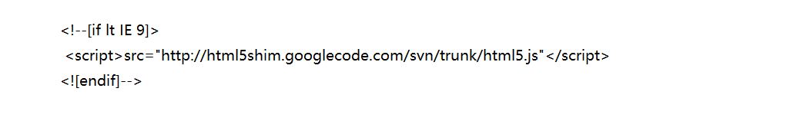
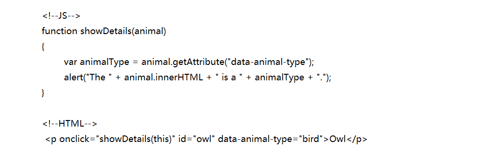

1.HTML5的新特性
①语义化: article, nav , footer, section, aside, hgroup，等.
②新增画布canvas: HTML5(canvas)元素用于图形的绘制，通过脚本 (通常是JavaScript)来完成
③video，audio的增加使得我们不需要在依赖外部的插件就可以往网页中加入音视频元素
④新增表单元素:email，url等，除去了center等样式标签，还有除去了有性能问题的frame，frameset等标签
- ⑤新属性:
- contextmenu当用户右击元素时将显示上下文菜单
- contentEditable可编辑
- hidden隐藏
- draggable拖拽
- data-* 日期
- placeholder占位属性
- required必填属性
- pattern正则属性
- autofocus自动聚焦属性
- autocomplete自动完成属性
- novalidate不验证属性
- multiple多选属性
⑥新增很多api:比如获取用户地理位置的window.navigator.geoloaction， 拖放 ondrag ondrop 关闭页面 onunload 窗口大小改变 onresize 取消了一些元素: font center等
⑦websocket websocket是一种协议，可以让我们建立客户端到服务器端的全双工通信，这就意味着服务器端可以主动推送数据到客户端
⑧webstorage:webstorage是本地存储，存储在客户端，包括localeStorage和sessionStorage，localeStorage是持久化存储在客户端，只要用户不主动删除，就不会消失，sessionStorage也是存储在客户端，但是他的存在时间是一个回话，一旦浏览器的关于该回话的页面关闭了，sessionStorage就消失了
2.HTML5移除的元素
纯表现的元素：basefont，big，center，font, s，strike，tt，u;
对可用性产生负面影响的元素：frame，frameset，noframes；
3.处理HTML5新标签的浏览器兼容问题
支持HTML5新标签： IE8/IE7/IE6支持通过document.createElement方法产生的标签， 可以利用这一特性让这些浏览器支持HTML5新标签， 浏览器支持新标签后，还需要添加标签默认的样式。
当然也可以直接使用成熟的框架、比如html5shim:
4.什么是语义化的html
5.使用XHTML的局限有哪些
6.区分 HTML 和 HTML5
7.XHTML和HTMl的区别
8.html的全局属性有哪些
- class：为元素设置类标识
- data-**：为元素添加自定义属性
- draggable：设置元素是否可以拖曳
- id：元素的id，同一个id文档内是唯一的
- style：元素样式
- title：鼠标上移显示信息
9.cookies，sessionStorage 和 localStorage的区别
- cookie：
- cookie是网站为了标示用户身份而储存在用户本地终端（Client Side）上的数据（通常经过加密）。
- cookie数据始终在同源的http请求中携带（即使不需要），记会在浏览器和服务器间来回传递。
- sessionStorage和localStorage不会自动把数据发给服务器，仅在本地保存
- 存储大小：
- cookie数据大小不能超过4k。
- sessionStorage和localStorage 虽然也有存储大小的限制，但比cookie大得多，可以达到5M或更大。
- 有期时间：
- localStorage:存储持久数据，浏览器关闭后数据不丢失除非主动删除数据；
- sessionStorage:数据在当前浏览器窗口关闭后自动删除。
- cookie:设置的cookie过期时间之前一直有效，即使窗口或浏览器关闭
- 作用域不同:
- sessionStorage不在不同的浏览器窗口中共享，即使是同一个页面；
- localStorage 在所有同源窗口中都是共享的；cookie也是在所有同源窗口中都是共享的
- Web Storage 支持事件通知机制，可以将数据更新的通知发送给监听者。
- Web Storage 的 api 接口使用更方便
10.浏览器本地存储与服务器端存储之间的区别
- 其实数据既可以在浏览器本地存储，也可以在服务器端存储
- 浏览器端可以保存一些数据，需要的时候直接从本地获取，sessionStorage、localStorage和cookie都由浏览器存储在本地的数据。
- 服务器端也可以保存所有用户的所有数据，但需要的时候浏览器要向服务器请求数据
- 1.服务器端可以保存用户的持久数据，如数据库和云存储将用户的大量数据保存在服务器端
- 2.服务器端也可以保存用户的临时会话数据。服务器端的session机制，如jsp的 session 对象，数据保存在服务器上。实现上，服务器和浏览器之间仅需传递session id即可，服务器根据session
- id找到对应用户的session对象。会话数据仅在一段时间内有效，这个时间就是server端设置的session有效期。
- 服务器端保存所有的用户的数据，所以服务器端的开销较大，而浏览器端保存则把不同用户需要的数据分布保存在用户各自的浏览器中。
- 浏览器端一般只用来存储小数据，而服务器可以存储大数据或小数据。
- 服务器存储数据安全一些，浏览器只适合存储一般数据
11.HTML5标签的作用?(用途)
1.结构更好，更利于搜索引擎的抓取（SEO的优化）和开发人员的维护(可维护性更高，因为结构清晰,so易于阅读)。
2.更有利于特殊终端的阅读(手机，个人助理等）
12.对Canvas理解以及和SVG的区别
canvas:是HTML5中新增一个HTML5标签与操作canvas的javascript API，它可以实现在网页中完成动态的2D与3D图像技术。
SVG:可缩放矢量图形（Scalable Vector Graphics）是基于可扩展标记语言（XML），用于描述二维矢量图形的一种图形格式。
注: SVG 绘图很容易编辑与生成，但功能明显要弱一些。 canvas可以完成动画、游戏、图表、图像处理等原来需要Flash完成的一些功能。
- 区别
- Canvas支持分辨率, SVG不支持
- Canvas不支持事件处理器, SVG支持
- Canvas只有弱的文本渲染能力, 而SVG最适合带有大型渲染区域的应用程序(比如谷歌地图)
- Canvas能够以.png或.jpg格式保存结果图像
- SVG的复杂度过高的话会减慢渲染速度(任何过度使用DOM的应用都不快)
- Canvas最适合图像密集型的游戏, 其中的许多对象会被频繁重绘. 而SVG不适合游戏应用
13.HTML5的form如何关闭自动完成功能？
14.data-*的作用
1.html5规范里增加了一个自定义data属性
2.data-为前端开发者提供自定义的属性，这些属性集可以通过对象的dataset属性获取，不支持该属性的浏览器可以通过，getAttribute方法获取。ppk提到过使用rel属性，lightbox库推广了rel属性，HTML5提供了data-做替代，这样可以更好 地使用自定义的属性
3.需要注意的是，data-之后的以连字符分割的多个单词组成的属性，获取的时候使用驼峰风格
使用参考：
15.Label的作用是什么？是怎么用的？
16.如何实现浏览器内多个标签页之间的通信？
WebSocket、SharedWorker、 也可以调用localstorge、cookies等本地存储方式
17.webSocket如何兼容低浏览器？(阿里)
18.实现不使用 border 画出1px高的线，在不同浏览器的标准模式与怪异模式下都能保持一致的效果
19.src和href的区别
src指向外部资源的位置, 用于替换当前元素, 比如js脚本, 图片等元素
href指向网络资源所在的位置, 用于在当前文档和引用资源间确定联系, 加载css
20.iframe是什么？有什么缺点？
提示：可以将提示文字放在iframe标签内容中，来提示某些不支持iframe的浏览器
缺点
会阻塞主页面的onload事件， 搜索引擎无法解读这种页面，不利于SEO
iframe和主页面共享连接池，而浏览器对相同区域有限制所以会影响性能。
21.如果把 HTML5 看作做一个开放平台，那它的构建模块有哪些
- 语义 - 允许您更准确地描述您的内容。
- 连通性 - 允许您以新的和创新的方式与服务器通信。
- 离线和存储 - 允许网页在本地存储客户端数据并更有效地脱机运行。
- 多媒体 - 在Open Web中制作视频和音频一等公民
- 2D / 3D图形和效果 - 允许更多样化的演示选项。
- 性能和集成 - 提供更高的速度优化和更好的计算机硬件使用。
- 设备访问 - 允许使用各种输入和输出设备。
- 造型 - 让作者写出更复杂的主题。
22.如果网页内容需要多语言,要怎么做
Data:2018 . 9/ 28